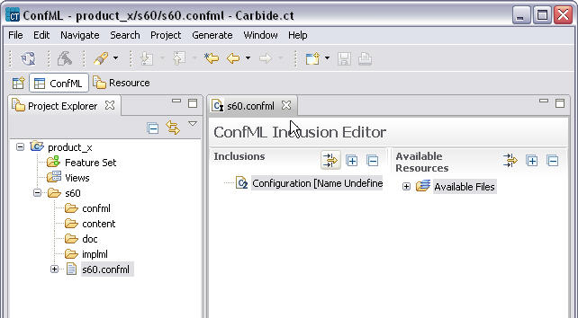

A Configuration Project can contain any number of layer folders, each representing a set of settings and customizable resources produced in certain phase of configuration process. Names of these layers can be arbitrary. Each layer contains at least the following folders confml, implml, content and doc. Confml folder contains confml files, implml folder contains implementation files, content folder contains customizable resources and doc folder contains documentation files.
To create a new layer:

Figure 3 Example of new layer inside configuration project
Information about collection of layers, their order and related metadata form a single configuration. Configuration project can consist of any number of configurations.
The following wizard allows user to create a configuration with single layer inside the configuration project: